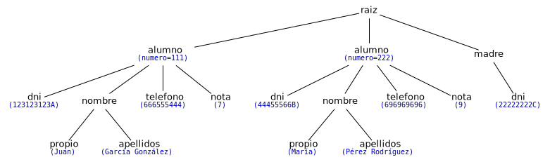
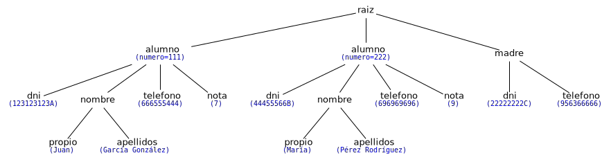

Ricardo Pérez López
IES Doñana, curso 2025/2026
set y frozenset)Un conjunto es una colección no ordenada de elementos hashables.
Se usan frecuentemente para comprobar si un elemento pertenece a un grupo, para eliminar duplicados en una secuencia y para realizar operaciones matemáticas como la unión, la intersección y la diferencia simétrica.
Como cualquier otra colección, los conjuntos permiten el uso de:
x\ in \ c
len(c)
for \ x\ in \ c
Como son colecciones no ordenadas, los conjuntos no almacenan la posición de los elementos o el orden en el que se insertaron.
Por tanto, tampoco admiten la indexación, las rodajas ni cualquier otro comportamiento propio de las secuencias.
Cuando decimos que un conjunto no está ordenado, queremos decir que los elementos que contiene no se encuentran situados en una posición concreta.
Es lo contrario de lo que ocurre con las sencuencias, donde cada elemento se encuentra en una posición indicada por su índice y podemos acceder a él usando la indexación.
Además, en un conjunto no puede haber elementos repetidos (un elemento concreto sólo puede estar una vez dentro de un conjunto, es decir, o está una vez o no está).
En resumen:
En un conjunto:
Un elemento concreto, o está una vez, o no está.
Si está, no podemos saber en qué posición (no tiene sentido preguntárselo).
Existen dos tipos predefinidos de conjuntos: set y frozenset.
El tipo set es
mutable, es decir, que su contenido puede cambiar
usando métodos como add y remove.
Como es mutable, no es hashable y, por tanto, no puede usarse como clave de un diccionario o como elemento de otro conjunto.
El tipo frozenset es
inmutable y hashable. Por tanto, su contenido
no se puede cambiar una vez creado y puede usarse como clave de un
diccionario o como elemento de otro conjunto.
Los dos tipos de conjuntos se crean con las funciones set([⟨iterable⟩]) y frozenset([⟨iterable⟩]):
Si se llaman sin argumentos, devuelven un conjunto vacío:
set() devuelve
un conjunto vacío de tipo set.
frozenset()
devuelve un conjunto vacío de tipo frozenset.
Como se ve, esas son, precisamente, las expresiones
canónicas de un conjunto vacío de tipo set y frozenset.
Si se les pasa un iterable (como por ejemplo, una lista), devuelve un conjunto formado por los elementos del iterable:
Además, existe una sintaxis especial para escribir
literales de conjuntos no vacíos de tipo set,
que consiste en encerrar sus elementos entre llaves y separados por
comas: {'pepe', 'juan'}.
>>> x = {'pepe', 'juan'} # un literal de tipo set, como set(['pepe', 'juan'])
>>> x
{'pepe', 'juan'}
>>> type(x)
<class 'set'>Esa es, precisamente, la expresión canónica de un
conjunto no vacío y, por tanto, la forma normal de
cualquier expresión que evalúa a un conjunto vacío. Por eso es la
expresión que se usa cuando se visualiza desde el intérprete o se
imprime con print.
Por tanto, para crear conjuntos congelados usando frozenset
podemos usar esa sintaxis en lugar de usar listas como hicimos
antes:
También podría usarse con la función set, pero
entonces estaríamos creando un nuevo conjunto igual que el anterior,
aunque no idéntico (es decir, sería una copia del
original):
En memoria, los conjuntos se almacenan mediante una estructura de datos donde sus elementos no se identifican mediante ningún índice o clave especial.
Por ejemplo, el siguiente conjunto:
se almacenaría de la siguiente forma según lo representa la herramienta Pythontutor:
También se pueden crear conjuntos por comprensión usando la misma sintaxis de las expresiones generadoras y las listas por comprensión, pero esta vez encerrando la expresión entre llaves.
Su sintaxis es:
{⟨expresión⟩
(for ⟨identificador⟩
in ⟨secuencia⟩
[if ⟨condición⟩])^+}Por ejemplo:
El resultado es directamente un valor de tipo set, no un
iterador.
Los conjuntos por comprensión, al igual que las expresiones generadoras y las listas por comprensión, determinan su propio ámbito.
Ese ámbito abarca todo el conjunto por comprensión, de principio a fin.
Al recorrer el iterable, las variables van almacenando en cada iteración del bucle el valor del elemento que en ese momento se está visitando.
Debido a ello, podemos afirmar que las variables que aparecen en
en cada cláusula for del conjunto por comprensión son
identificadores cuantificados, ya que toman sus valores
automáticamente y éstos están restringido a los valores que devuelva el
iterable.
Además, estos identificadores cuantificados son locales al conjunto por comprensión, y sólo existen dentro de él.
Debido a lo anterior, esos identificadores cumplen estas dos propiedades:
Se pueden renombrar (siempre de forma consistente) sin que el conjunto por comprensión cambie su significado.
Por ejemplo, los dos conjuntos por comprensión siguientes son equivalentes, puesto que producen el mismo resultado:
No se pueden usar fuera del conjunto por comprensión, ya que estarían fuera de su ámbito y no serían visibles.
Por ejemplo, lo siguiente daría un error de nombre:
\underline{s} y \underline{o} son conjuntos, y \underline{x} es un valor cualquiera:
| Operación | Resultado |
|---|---|
len(s) |
Número de elementos de \underline{s} (su cardinalidad) |
x\ in \ s |
True si \underline{x} pertenece a \underline{s} |
x\ not in \ s |
True si \underline{x} no pertenece a \underline{s} |
s.isdisjoint(o) |
True si \underline{s} no tiene ningún elemento en
común con \underline{o} |
s.issubset(o)s <= o |
True si \underline{s} es un subconjunto de \underline{o} |
s
< o |
True si \underline{s} es un subconjunto propio de
\underline{o} |
s.issuperset(o)s >= o |
True si \underline{s} es un superconjunto de \underline{o} |
s
> o |
True si \underline{s} es un superconjunto propio de
\underline{o} |
| Operación | Resultado |
|---|---|
s.union(o)s | o |
Unión de \underline{s} y \underline{o} (s \cup o) |
s.intersection(o)s & o |
Intersección de \underline{s} y \underline{o} (s \cap o) |
s.difference(o)s - o |
Diferencia de \underline{s} y \underline{o} (s \setminus o) |
s.symmetric_difference(o)s ^ o |
Diferencia simétrica de \underline{s} y \underline{o} (s \vartriangle o) |
s.copy() |
Devuelve una copia superficial de \underline{s} |
Tanto set como frozenset
admiten comparaciones entre conjuntos.
Suponiendo que a y b son conjuntos:
a == b si y sólo si cada elemento de a
pertenece también a b, y viceversa; es decir, si cada uno
es un subconjunto del otro.
a <= b si y sólo si a es un
subconjunto de b (es decir, si cada elemento de
a está también en b).
a < b si y sólo si a es un
subconjunto propio de b (es decir, si
a es un subconjunto de b, pero no es igual a
b).
a >= b si y sólo si a es un
superconjunto de b (es decir, si cada elemento de
b está también en a).
a > b si y sólo si a es un
superconjunto propio de b (es decir, si
a es un superconjunto de b, pero no es igual a
b).
set y no
al frozenset):| Operación | Resultado |
|---|---|
s.update(o)s |= o |
Actualiza \underline{s} añadiendo los elementos de \underline{o} |
s.intersection_update(o)s &= o |
Actualiza \underline{s} manteniendo sólo los elementos que están en \underline{s} y \underline{o} |
s.difference_update(o)s -= o |
Actualiza \underline{s} eliminando los elementos que están en \underline{o} |
s.symmetric_difference_update(o)s ^= o |
Actualiza \underline{s} manteniendo sólo los elementos que están en \underline{s} y \underline{o} pero no en ambos |
| Operación | Resultado |
|---|---|
s.add(x) |
Añade \underline{x} a \underline{s} |
s.remove(x) |
Elimina \underline{x} de \underline{s} (produce KeyError si
\underline{x} no está en \underline{s}) |
s.discard(x) |
Elimina \underline{x} de \underline{s} si está en \underline{s} |
s.pop() |
Elimina y devuelve un valor cualquiera de
\underline{s} (produce KeyError si
\underline{s} está vacío) |
s.clear() |
Elimina todos los elementos de \underline{s} |
Como cualquier otro dato iterable, los conjuntos se pueden recorrer usando iteradores.
El orden en el que se recorren los elementos del conjunto no está determinado de antemano, es decir, que el iterador puede entregar los elementos del conjunto en cualquier orden:
dict)Un diccionario es una colección que almacena correspondencias (o asociaciones) entre valores.
Por tanto, los elementos de un diccionario son parejas de valores llamados clave y valor, y lo que hace el diccionario es almacenar las claves y el valor que le corresponde a cada clave.
Además, los elementos de un diccionario son datos mutables y, por tanto, los diccionarios también son mutables.
En consecuencia, los diccionarios NO son hashables.
Los diccionarios se pueden crear:
Con una pareja de llaves:
que representan el diccionario vacío.
Encerrando entre llaves una lista de parejas ⟨clave⟩:⟨valor⟩ separadas por comas:
Esa es precisamente la expresión canónica del
diccionario y, por tanto, la que se usa cuando se visualiza desde el
intérprete o se imprime con print.
Usando dict() o dict(⟨iterable⟩).
Por ejemplo:
>>> v1 = {} # diccionario vacío
>>> v2 = dict() # también diccionario vacío
>>> v1 == v2
True # son iguales
>>> a = {'uno': 1, 'dos': 2, 'tres': 3} # literal
>>> b = dict(uno=1, dos=2, tres=3) # paso de argumentos por palabra clave
>>> c = dict([('dos', 2), ('uno', 1), ('tres', 3)]) # lista de tuplas
>>> d = dict({'tres': 3, 'uno': 1, 'dos': 2}) # crea una copia
>>> e = dict(zip(['uno', 'dos', 'tres'], [1, 2, 3])) # con dos iterables
>>> a == b and b == c and c == d and d == e # todos son iguales
TrueEn memoria, los diccionarios se almacenan como tablas de dos columnas, la clave y el valor.
Por ejemplo, el siguiente diccionario:
se almacenaría de la siguiente forma según lo representa la herramienta Pythontutor:
Las claves de un diccionario deben cumplir dos restricciones:
Deben ser únicas en ese diccionario.
Deben ser hashables.
En un diccionario dado, cada clave sólo puede asociarse con un único valor.
Por tanto, en un diccionario no puede haber claves repetidas, es decir, que no puede haber dos elementos distintos con la misma clave.
Esto es así porque los elementos de un diccionario se identifican mediante su clave.
Así que, para acceder a un elemento dentro de un diccionario, debemos indicar la clave del elemento.
Los tipos numéricos que se usen como claves obedecen las reglas normales de comparación numérica.
Por tanto, si dos números son considerados iguales (como 1 y 1.0) entonces
se consideran la misma clave dentro del diccionario.
Si se intenta crear un diccionario con claves repetidas, sólo se almacenará uno de los elementos que tengan la misma clave (los demás se ignoran):
Como se ve, la clave 'perro'
está repetida y, por tanto, sólo se almacena uno de los dos elementos
con clave repetida, que siempre es el último que se va a insertar en el
diccionario.
En este caso, se almacena el elemento 'perro': 'doggy'
y se ignora el 'perro': 'dog'.
Por otra parte, las claves de un diccionario deben ser datos hashables.
Por tanto, no se pueden usar como clave una lista, un conjunto
set, otro
diccionario o cualquier otro dato mutable.
Si se intenta crear un diccionario con una clave no
hashable, se produce un error TypeError:
>>> {[1, 2]: 'a', [3, 4]: 'b'} # Las listas no son hashables
Traceback (most recent call last):
File "<stdin>", line 1, in <module>
TypeError: unhashable type: 'list'
>>> {{1, 2}: 'a', {3, 4}: 'b'} # Los conjuntos set tampoco
Traceback (most recent call last):
File "<stdin>", line 1, in <module>
TypeError: unhashable type: 'set'En cambio, sí se puede usar un frozenset, al
ser hashable:
Desde la versión 3.7 de Python, los elementos dentro de un diccionario se almacenan en el orden en el que se van insertando dentro del diccionario, aunque ese orden sólo tiene importancia en determinadas situaciones concretas.
Dos diccionarios se consideran iguales si ambos
contienen los mismos elementos, es decir, si tienen las mismas parejas
⟨clave⟩:⟨valor⟩, sin importar el orden en el
que aparezcan los elementos en el diccionario:
Para acceder a un elemento del diccionario se usa una sintaxis idéntica a la de la indexación, salvo que, en este caso, en lugar de usar el índice o posición del elemento, se usa la clave:
Si se intenta acceder a un elemento usando una clave que no
existe, se lanza una excepción de tipo KeyError:
También se pueden crear diccionarios por
comprensión usando una sintaxis análoga a la de los
conjuntos por comprensión (encerrando la expresión
entre llaves), pero de forma que los elementos estén formados por
parejas de clave y valor separados por :.
Su sintaxis es:
{⟨clave⟩:⟨valor⟩
(for ⟨identificador⟩
in ⟨secuencia⟩
[if ⟨condición⟩])^+}donde ⟨clave⟩ debe ser una expresión que devuelva valores hashables, y ⟨valor⟩ puede ser una expresión cualquiera.
Por ejemplo:
devuelve el diccionario que asocia a cada número 1, 2 y 3 con su correspondiente cuadrado.
El resultado es directamente un valor de tipo dict, no un
iterador.
Los diccionarios por comprensión, al igual que los conjuntos por comprensión, las expresiones generadoras y las listas por comprensión, determinan su propio ámbito.
Ese ámbito abarca todo el diccionario por comprensión, de principio a fin.
Al recorrer el iterable, las variables van almacenando en cada iteración del bucle el valor del elemento que en ese momento se está visitando.
Debido a ello, podemos afirmar que las variables que aparecen en
en cada cláusula for del diccionario por comprensión son
identificadores cuantificados, ya que toman sus valores
automáticamente y éstos están restringido a los valores que devuelva el
iterable.
Además, estos identificadores cuantificados son locales al diccionario por comprensión, y sólo existen dentro de él.
Debido a lo anterior, esos identificadores cumplen estas dos propiedades:
Se pueden renombrar (siempre de forma consistente) sin que el diccionario por comprensión cambie su significado.
Por ejemplo, los dos diccionarios por comprensión siguientes son equivalentes, puesto que producen el mismo resultado:
No se pueden usar fuera del diccionario por comprensión, ya que estarían fuera de su ámbito y no serían visibles.
Por ejemplo, lo siguiente daría un error de nombre:
\underline{d} y \underline{o} son diccionarios, \underline{c} es una clave válida y \underline{v} es un valor cualquiera:
| Operación | Resultado |
|---|---|
d[c] |
Devuelve el valor asociado a \underline{c} en \underline{d} (lanza KeyError si
\underline{c} no está en \underline{d}) |
d[c] = v |
Asocia a la clave \underline{c} el valor \underline{v} en \underline{d} (crea el elemento dentro de \underline{d} si la clave \underline{c} no estaba ya en \underline{d}) |
del \ d[c] |
Borra de \underline{d} el elemento cuya clave es \underline{c} (lanza KeyError si
\underline{c} no está en \underline{d}) |
len(d) |
Número de elementos de \underline{d} |
c\ in \ d |
True si \underline{d} contiene un elemento con clave
\underline{c} |
c\ not in \ d |
True si \underline{d} no contiene un elemento con
clave \underline{c} |
d.clear() |
Elimina todos los elementos de \underline{d} |
d.copy() |
Devuelve una copia superficial de \underline{d} |
| Operación | Resultado |
|---|---|
d.get(c[, def]) |
Si la clave \underline{c} está en \underline{d}, devuelve d[c]; si no está, devuelve \underline{def}, que por defecto es None |
d.pop(c[, def]) |
Si la clave \underline{c} está en \underline{d}, devuelve d[c] y elimina de \underline{d} el elemento con clave \underline{c}; si no está, devuelve \underline{def} (si no se pasa \underline{def} y la clave \underline{c} no está en \underline{d}, lanza un KeyError) |
d.popitem() |
Selecciona un elemento de \underline{d} siguiendo un orden LIFO, lo
elimina de \underline{d} y lo devuelve
en forma de tupla (clave,valor) (lanza un KeyError si
\underline{d} está vacío) |
d.setdefault(c[, def]) |
Si la clave \underline{c} está en \underline{d}, devuelve d[c]; si no está, inserta en \underline{d} un elemento con clave \underline{c} y valor \underline{def}, y devuelve \underline{def} (que por defecto es None) |
d.update(o) |
Actualiza \underline{d} con las parejas (clave, valor) de \underline{o}, sobreescribiendo las claves ya
existentes en \underline{d}, y devuelve
None |
Como cualquier otro dato iterable, los diccionarios se pueden recorrer usando iteradores.
El orden en el que se recorren los elementos del diccionario es el orden en el que están almacenados los elementos dentro del diccionario que, como ya sabemos, desde la versión 3.7 de Python coincide con el orden en el que se han ido insertando los elementos en el diccionario.
Los iteradores creados sobre un diccionario, en realidad, recorren sus claves:
Si, además de acceder a las claves, necesitamos también acceder a los valores del diccionario mientras lo recorremos, podemos:
Acceder al valor a partir de la clave usando indexación:
Usar el método items sobre
el diccionario (el cual devuelve un objeto que, al iterar sobre él,
genera una secuencia de tuplas (⟨clave⟩,
⟨valor⟩)),
y combinarlo con el desempaquetado de tuplas:
keys y values.keys devuelve un objeto
que, al iterar sobre él, va generando las claves del
diccionario sobre el que se invoca:
En la práctica, no resulta muy útil usar keys, ya que se puede hacer lo mismo
recorriendo directamente el propio diccionario, como ya sabemos:
Los documentos XML se pueden considerar datos estructurados en forma de árbol (es decir, con una estructura jerárquica y, por tanto, no secuencial).
Por ejemplo, supongamos el siguiente documento XML:
<?xml version="1.0"?>
<raiz>
<alumno numero="111">
<dni>12312312A</dni>
<nombre>
<propio>Juan</propio>
<apellidos>García González</apellidos>
</nombre>
<telefono>666555444</telefono>
<nota>7</nota>
</alumno>
<alumno numero="222">
<dni>44455566B</dni>
<nombre>
<propio>María</propio>
<apellidos>Pérez Rodríguez</apellidos>
</nombre>
<telefono>696969696</telefono>
<nota>9</nota>
</alumno>
<madre>
<dni>22222222C</dni>
</madre>
</raiz>Podemos encontrarnos lo siguiente:
Lo que hay entre ángulos (como <raiz>) es una
etiqueta.
Lo que hay entre dos etiquetas (como el 7 en
<nota>7</nota>) es el texto de la
etiqueta.
Lo que hay dentro de la etiqueta (como numero="111")
es un atributo de la etiqueta.
numero="111" es un atributo de la primera etiqueta
<alumno>.
numero es el nombre del atributo.
111 es el valor del atributo
numero.
Puede haber etiquetas con uno o varios atributos y etiquetas sin atributos.
Ese documento representaría la siguiente estructura jerárquica:

Se observa que:
Cada nodo representa una etiqueta del documento XML.
Si una etiqueta contiene a otra, su correspondiente nodo en el árbol tendrá un hijo que representa a la etiqueta que contiene.
Los hijos de un nodo están ordenados por la posición que ocupan dentro de su etiqueta padre.
El módulo xml.etree.ElementTree (documentado en https://docs.python.org/3/library/xml.etree.elementtree.html)
implementa una interfaz sencilla y eficiente para interpretar y crear
datos XML.
Para importar los datos de un archivo XML, podemos hacer:
Si los datos XML se encuentran ya en una cadena, se puede hacer directamente:
Los nodos del árbol se representan internamente mediante objetos
de tipo Element, los cuales disponen de ciertos atributos y
responden a ciertos métodos.
¡Cuidado! Aquí, cuando hablamos de
atributos, nos referimos a información que contiene el objeto
(una cualidad del objeto según el paradigma orientado a
objetos) y a la cual se puede acceder usando el operador punto
(.), no a los atributos que pueda tener una etiqueta según
consten en el documento XML.
Los objetos de tipo Element disponen de los
siguientes atributos:
tag: una cadena que representa a la etiqueta del
nodo (por ejemplo: si la etiqueta es <alumno>,
entonces tag contendrá 'alumno').
attrib: un diccionario que representa a los
atributos de esa etiqueta en el documento XML.
text: una cadena que representa el contenido del
nodo, es decir, el texto que hay entre
<etiqueta> y
</etiqueta>.
Por ejemplo, si tenemos la siguiente etiqueta en el documento XML:
y la variable nodo contiene el nodo (es decir, el objeto
Element) que representa a dicha etiqueta en el árbol,
entonces:
nodo.tag valdrá 'telefono'.
nodo.attrib valdrá {'tipo': 'movil'}.
nodo.text valdrá '666555444'.
En nuestro caso, raiz es un objeto de tipo
Element que, además, representa al nodo raíz del árbol
XML.
Por tanto, tendríamos lo siguiente:
Los objetos Element son iterables.
Por ejemplo, el nodo raíz tiene nodos hijos (nodos que
«cuelgan» directamente del nodo raíz) sobre los cuales se puede iterar
desde el objeto raiz:
Los hijos están anidados, y podemos acceder a nodos concretos a
través de su índice (es decir, que los objetos Element son
indexables):
Los objetos de tipo Element disponen de métodos
útiles para iterar recursivamente sobre todos los subárboles situados
debajo de él (sus hijos, los hijos de sus hijos, y así
sucesivamente).
Por ejemplo, el método iter devuelve un
iterador que recorre todos los nodos del árbol desde el
nodo actual (el nodo sobre el que se invoca al método) en un orden
primero en profundidad.
Eso quiere decir que va visitando los nodos en el mismo orden en el que se encuentran escritos en el documento XML, incluyendo el propio nodo sobre el que se invoca.
Por ejemplo:
El método findall devuelve una lista con los nodos
que tengan una cierta etiqueta y que sean hijos directos del nodo sobre
el que se invoca.
Puede devolver una lista vacía si no hay nodos que cumplan la condición.
El método find devuelve el primer hijo directo del
nodo sobre el que se invoca, siempre que tenga una cierta etiqueta
indicada como argumento.
Puede devolver None si el nodo
no tiene ningún hijo con esa etiqueta.
El método get devuelve el valor de algún atributo de
la etiqueta asociada a ese nodo:
Si la etiqueta no tiene el atributo indicado en el argumento de
get, éste devuelve None o el valor
que se haya indicado en el segundo argumento:
También disponemos de la función dump que devuelve
la cadena correspondiente al nodo que se le pase como argumento:
Para una especificación más sofisticada de los elementos a
encontrar, se pueden usar las expresiones XPath con los
métodos find y findall:
| Sintaxis | Significado |
|---|---|
| etiqueta | Selecciona todos los nodos hijo con la
etiqueta etiqueta. Por ejemplo,
pepe selecciona todos los nodos hijo llamados
pepe, y pepe/juan selecciona todos los nietos
llamados juan en todos los hijos llamados
pepe. |
* |
Selecciona todos los nodos hijo
inmediatos. Por ejemplo, */pepe selecciona todos los nietos
llamados pepe. |
. |
Selecciona el nodo actual. Se usa, sobre todo, al principio de la ruta para indicar que es una ruta relativa. |
// |
Selecciona todos los subnodos en cualquier
nivel por debajo de un nodo. Por ejemplo, .//pepe
selecciona todos los nodos pepe que haya en todo el
árbol. |
.. |
Selecciona el nodo padre. Devuelve None si se
intenta acceder a un ancestro del nodo de inicio (aquel sobre el que se
ha llamado al método find). |
Continuación de las expresiones XPath:
| Sintaxis | Significado |
|---|---|
[@atrib] |
Selecciona todos los nodos que tienen el atributo atrib. |
[@atrib='valor'] |
Selecciona todos los nodos que tienen el valor valor en el atributo atrib. El valor no puede contener apóstrofes. |
[@atrib!='valor'] |
Selecciona todos los nodos que tienen el valor valor en el atributo atrib. El valor no puede contener apóstrofes. |
[etiqueta] |
Selecciona todos los nodos que tienen un hijo inmediato llamado etiqueta. |
[posición] |
Selecciona todos los nodos situados en
cierta posición. Ésta puede ser un entero
(1 es la primera posición), la expresión
last() (la última posición) o una posición relativa a la
última posición (por ejemplo, last() - 1). |
# Los nodos de nivel más alto:
>>> raiz.findall(".")
[<Element 'raiz' at 0x7f929c29cf40>]
# Los nietos 'dni' de los hijos 'alumno' de los nodos de nivel más alto:
>>> raiz.findall("./alumno/dni")
[<Element 'dni' at 0x7f929c29d040>,
<Element 'dni' at 0x7f929c29d270>]
# Lo de antes equivale a hacer (porque el nodo actual es el raíz):
>>> raiz.findall("alumno/dni")
[<Element 'dni' at 0x7f929c29d040>,
<Element 'dni' at 0x7f929c29d270>]
# Los nodos con numero='111' que tienen un hijo 'dni':
>>> raiz.findall(".//dni/..[@numero='111']")
[<Element 'alumno' at 0x7f929c29cf90>]
# Antes de // hay que poner algo que indique el nodo debajo del
# cual se va a buscar:
>>> raiz.findall("//dni/..[@numero='111']")
SyntaxError: cannot use absolute path on element# Todos los nodos 'dni' del árbol completo:
>>> raiz.findall('.//dni')
[<Element 'dni' at 0x7f547a0e9950>,
<Element 'dni' at 0x7f547a0e9b80>,
<Element 'dni' at 0x7f547a0e9e00>]
# Sólo los DNIs que estén por debajo de un nodo 'madre'
# en cualquier nivel:
>>> raiz.findall('madre//dni')
[<Element 'dni' at 0x7f547a0e9e00>]
# Los nodos 'dni' que son hijos de los nodos con numero='111':
>>> raiz.findall(".//*[@numero='111']/dni")
[<Element 'dni' at 0x7f929c29d040>]
# Los nodos 'alumno' que son hijos segundos de sus padres:
>>> raiz.findall(".//alumno[2]")
[<Element 'alumno' at 0x7f929c29d220>]
# Los nodos 'alumno' hijos directos del actual que tienen un hijo 'nota':
>>> raiz.findall("./alumno[nota]")
[<Element 'alumno' at 0x7f929c29cf90>,
<Element 'alumno' at 0x7f929c29d220>]
# Lo de antes equivale a hacer (porque el nodo actual es el raíz):
>>> raiz.findall("alumno[nota]")
[<Element 'alumno' at 0x7f929c29cf90>,
<Element 'alumno' at 0x7f929c29d220>]ElementTree proporciona una forma sencilla de crear
documentos XML y escribirlos en archivos.
Para ello, usamos el método write.
Una vez creado, un objeto Element puede manipularse
directamente:
Cambiando los atributos del objeto, como text o
attrib.
Cambiando los atributos de la etiqueta a la que representa el
objeto, con el método set.
Añadiendo nuevos hijos con los métodos append o
insert.
Eliminando hijos con el método remove.
Por ejemplo, supongamos que queremos sumarle 1 a la
nota de cada alumno y añadir un atributo
modificado a la etiqueta nota:
Nuestro XML tendría ahora el siguiente aspecto:
<?xml version="1.0"?>
<raiz>
<alumno numero="111">
<dni>12312312A</dni>
<nombre>
<propio>Juan</propio>
<apellidos>García González</apellidos>
</nombre>
<telefono>666555444</telefono>
<nota modificado="si">8</nota>
</alumno>
<alumno numero="222">
<dni>44455566B</dni>
<nombre>
<propio>María</propio>
<apellidos>Pérez Rodríguez</apellidos>
</nombre>
<telefono>696969696</telefono>
<nota modificado="si">10</nota>
</alumno>
<madre>
<dni>22222222C</dni>
</madre>
</raiz>Podemos insertar nuevos nodos hijos de un determinado nodo con
los métodos append o insert, como si el nodo
fuese una lista.
Para ello, primero normalmente crearemos el nodo que vamos a
insertar usando
Element(etiqueta).
Por ejemplo, añadimos el teléfono a la única madre que tenemos en el documento XML:

Podríamos haber usado insert en lugar de
append para cambiar la posición donde situar el nodo
hijo.
Por ejemplo, si queremos situar el teléfono antes que el DNI, podríamos hacer:
Podemos eliminar elementos con el método remove. Por
ejemplo, supongamos que queremos eliminar todos los alumnos con una
nota inferior a 9:
Tener en cuenta que la modificación concurrente mientras se hace una iteración puede dar problemas, lo mismo que ocurre cuando se modifican listas o diccionarios mientras se itera sobre ellos.
Por ello, el ejemplo primero recoge todos los elementos con
findall y sólo entonces itera sobre la lista que
devuelve.
Si usáramos iter en lugar de findall se
podrían dar problemas debido a que iter va devolviendo
perezosamente los nodos (es un iterador) y el conjunto de nodos que
devuelve podría verse afectado por los borrados.
Nuestro XML tendría ahora el siguiente aspecto:
Si lo que queremos es mover un nodo (es decir,
cambiar un nodo de sitio), podemos combinar los efectos de
append e insert con
remove.
Por ejemplo, si queremos mover la etiqueta
<madre> dentro de la etiqueta
<alumno>, podríamos hacer:
Nuestro XML tendría ahora el siguiente aspecto:
La función SubElement también proporciona una forma
muy conveniente de crear sub-elementos de un elemento dado: